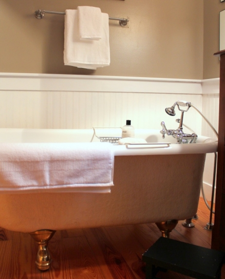
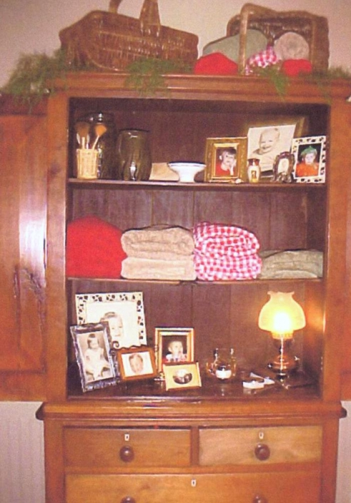
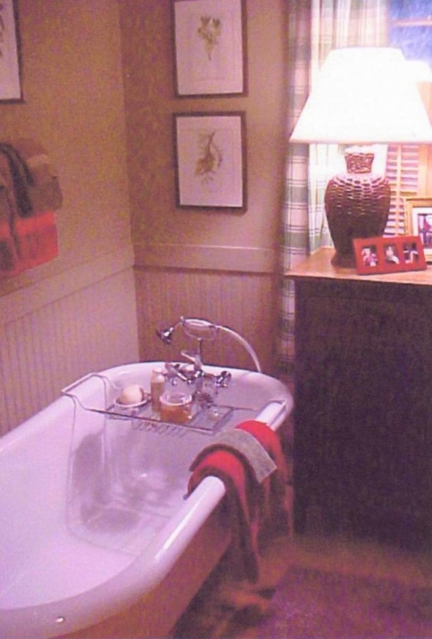

.png)
.PNG)
.PNG)
.PNG)
.PNG)
.PNG)
.JPG)
.JPG)
.PNG)
.PNG)



I told you that I would show you the master bathroom this week, and I have finally finished with all the changes I can do – well, all except for one, and that one I’ll do tomorrow. I am calling this “tweaking” because they were mostly just small changes – no walls or plumbing or electrical items were harmed in this procedure. (Actually, I guess I did harm the walls when I hung new towel bars.)
I am going to go waaaay back and show you a few photos of the room from 8 years ago. As usual, these grainy pictures are from Christmas because it seems that was the only time I took photographs of the house.

There is quite an assortment of frames here, isn’t it?
Well, at least I had matching botanical prints in the other room.

Lots of red and green – and it wasn’t just for Christmas. The bathroom really did have the green plaid drapes year round, and I really did use red, green, and tan towels with it.
Now keep in mind that I take a long hot bath every single night, and I stare up at those drapes and the botanicals every single night. Sooooo…after several years of staring at them, I decided I wanted something different.

I went with blue plaid and changed out all the botanical prints for black and white photographs. This is not my current stage – this is the middle stage I am showing you. Again this is Christmas. It was changed probably 2 years after the previous pictures.
And one more look at the room then. 
Now, some of you will probably like the blue better than my newest tweaking. That’s okay. I still have the green plaid drapes and the blue ones too so that I can change it back whenever I feel the desire to do so. Nothing was wrong with the blue. I was just tired of staring at them every night for 6 years, so I needed a change. (6 years may be a record for me!) Here is my latest version…
Have you figured out that the bathroom is really 2 rooms here? You come in the first door and see this.
Both rooms are actually painted the same color – just the lighting is making it look like it is different in each room. This cupboard is made of wormwood…there are very interesting patterns in the wood of the upper part. I didn’t change out the accessories much, mainly the top so that it is not so cluttered and the towels to keep them in a unified color.
Here is a closer look at it.

and here….
When you come in the door, the cabinet above is on your left. On your right is a closet and the sink. My husband added trim to the top of the beadboard here as he did in the half bath.
This is a better view of the shelf above the sink. And yes, I do want to change out the brass on that shelf for another finish.
If you look through the other door of the room, this is what you will see.
The bathtub is to the left, and there is a shower on the right.

Next to the bathtub is a piece of furniture.
This particular piece has gotten around in our house. At one time, it was in the dining area. Then it was used as the base for the cupboard in the other part of this bathroom. Don’t you love pieces of furniture that are so versatile they can be used in multiple rooms?
This little spot got re-accessorized in my tweaking. Gone are the clock radio, the CD’s, and the jar filled with towels. I tried to pare it down a little here, especially in light of the oversized floral in the fabric of the drapes. Going with a big red floral is a major change from the cool and calm small blue plaid. I wanted something that would warm up the space.
I’m thinking of adding a bamboo shade above the window, but it may look too cluttered…thinking on that one still. Any ideas from you all on that? My to-do for tomorrow is make a new shower curtain. I have a new khaki one up there right now, but it is looking too dark to me. (That’s why I did not show it to you.) I’m hoping a white one will take care of that.
My other to-do’s are for my husband. I am pondering the idea of doing the ceiling out of beadboard – painted white, or wood planks – painted or stained..nor sure which if we go with that. And finally, I would like to take down the 2 overhead lights and replace them with pendants and also replace the 2 sconces with ones out of a different finish.

But these ideas can wait. I am happy with the room as it is right now. I didn’t make a lot of changes, but the room does have a different feel to it than it did before – thanks mostly to the new drapes. Isn’t it amazing what pattern and color can do? By the way, the bathtub is not painted yellow as it appears in the photo above. It’s just the shadow and the lighting making it look like it is. And the little black stool is for holding books – I love to read in the tub!
Thanks for allowing me to share this space with you.
I would love to hear your thoughts on adding a bamboo shade above the window. 🙂


.PNG)
I love how light and airy your bathroom is…love a window in the bathroom! I have a tall narrow one that I have a bamboo blind up at, it would not look right with a curtain. My friend Leigh Ann used bamboo blinds and curtains in her bathroom…you can see it on her blog radiobutlers.blogspot.com and go to her April 5, 2012 post on “Bathroom Reveal”…just so you can see how the bamboo blind looks.
If it were me I’d probably buy a bamboo blind and “hold it up” so I could see if I liked it or not. But I do love your “nekid” window (LOL)! Also, I like your idea of adding beadboard to the ceiling is great.
I know that whatever you decide to do will look wonderful!
————————————————————————-
Judy – Like you, I love windows in a bathroom. My husband says I would build a glass house if I could! I will definitely check out your friend’s blog to see how the blinds look, and I may run to Lowes to get one to try out above the “nekid” window…:) Thank you for the advice (and thanks for the follow on Pinterest too!)
Kelly
Kelly-love your bathroom! You are good. One of these days YOU will be in Southern Living as the interior decorator!
———————————————————————–
Susan – I doubt I will be in Southern Living, but I do appreciate your vote of confidence! ha ha. And thank you for the award over at your blog! I will be writing about it and passing it on to another on my 4th of July post (hopefully!) That was mighty sweet of you.
Kelly
Beautiful bathroom Kelly! Your furniture is way better than mine! Ha, ha! I was liking the green curtains but then you showed us the gorgeous red ones…am really liking those! A bamboo shade would sure look nice, I know what you mean about clutter but I remember it really looked great when Delores on Vignette Design added them to her kitchen.(of course, don’t listen to me I barely have curtains anywhere!) The white towels are very calming, love that. And what a beautiful place to take a bath each night! And, at the risk of going on and on…your husband did a fantastic job on the trim!
————————————————————————
Kim – So glad you gave your input on the blinds! I’m still pondering the idea. Know that your sweet comments are really appreciated, and I will happily pass on the compliment to my husband. ):
Kelly
LOVE that bathroom!!!
———————————————————————–
Marie – Thanks girl! Glad you loved the room!
Kelly
I love that you can fit furniture in your bathroom. I’ve often wanted just a simple chair. Alas, it is not to be. I love the new red and white curtains. I don’t know if it’s the photo or true to life, but they add a brightness to the room that I find quite cheery!
———————————————————————-
Julianna – I believe you are right. The curtains give the room a cheerful feel – especially after the calm blue ones. I appreciate you so much for reading and jumping in the conversation. Wish I could give you some space for a piece of furniture in your bathroom!
Kelly
Kelly, your bathroom is gorgeous and has so inspired me today! I dream of a bathtub like that and time to take a bath each night. How do you find time for that with kids? I think I need to rearrange my priorities! I love the use of furniture too in this bathroom. It is so beautiful and relaxing – I LOVE it!
————————————————————————
Lindsay – I’m sure your priorities are right. My youngest is 17, and I never could have done all this (and blogging too!) when they were little – although I do have a photo of one of the boys – age 4 – where he wrapped himself in the wallpaper (paste and all!) that I was hanging at the time! ): Thank you for stopping by and leaving your very kind words here.
Kelly
Kelly, it’s beautiful! Changing the curtains did give it a whole new look. Nice seeing its former lives- all great, love the latest. I love your furniture & family pictures in the bath. Thanks for sharing! Have a great weekend. Stay cool!
Robin
———————————————————————–
Robin – Thank you for your sweet comments! I love that phrase “former lives”… going to have to remember to use that. You try to stay cool too in this Georgia heat. Didn’t know until just then that they are predicting 104 for tomorrow…man!
Kelly
Wow, that room is GORGEOUS! I love the black and whites {of course}, the silver accents, and the drapery fabric. Thanks for the inspiration, Kelly! You know I pinned them too, haha! 😉
——————————————————————–
Gosh Aimee – thank you girl!! And thank you for pinning the pictures. I sometimes really hesitate to post photos of our house on the internet because I just don’t seem to follow the trends in decor these days. I feel like I am waaay too traditional for today’s reader, and I think “Would anyone even want to see this?” Your kind words are so reassuring to me, so know that I treasure your comments.
Kelly